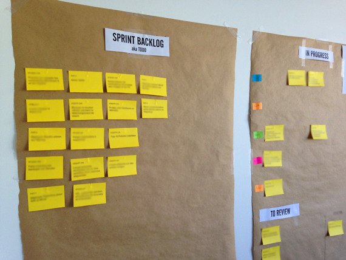
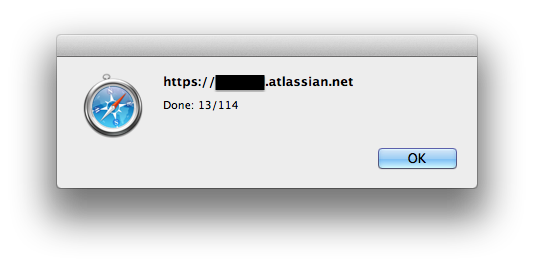

Bookmarklets for Jira OnDemand
Sometimes you run out of Post-Its. Shit happens. Let’s keep the task board busy anyway…
It happened to me in real-life. We just agreed on our Sprint backlog and are willing to display it proudly on our walls but… there’s no Post-Its left.
If you’re using OnDemand Jira, here is an option to help you.
The Magic of jQuery and CSS
Click here to access the two bookmarklets I created for OnDemand Jira.
⚠️ WTF?! What’s a bookmarklet?!
The Post-It Bookmarklet
Head on your OnDemand Jira instance, and choose a filter view. Click on the
Post-It bookmarklet. Tada!
You get a printable page that you can print, cut and paste on your task board!

The Burndown Chart Bookmarklet
Refresh your page to get the usual filter view and click on the Burndown Chart
bookmarklet. Depending on your issues’ statuses, you’re informed of how much is
done compared to your sprint overall point amount. (To work properly, the filter
view must show the optional Story Points column).

Troubleshooting
If the “tada” moment is more of a “nothing happened” moment, try to get some context and yell at me here.
Full disclosure: other solutions could be:
- Agile Cards for JIRA plugin by Spartez but you won’t be able to get it if you run the OnDemand version of Jira
- This open-source Ruby gem by jhollingworth